Composite build
Carbon-fiber Purdue Pete
- Took over the project and finished the head: prepreg layup, vacuum bagging, autoclave cure, trim and paint
- 3D-scanned the head and designed removable helmet brackets in CATIA V5; interviewed by Purdue News
Project portfolio
Manufacturing & Process EngineeringPrepreg Layup & Autoclave · 5-Axis CNC · CATIA V5 · Test & Validation · FAA A&P
I’m a graduate research assistant at Purdue’s Composites Manufacturing & Simulation Center. I make carbon-fiber parts from prepreg layup to autoclave cure, machine large 3D-printed composite parts on a Thermwood 5-axis router, and build the fixtures, sensors and wiring that test them.
Projects
01 · CFRP conditioning · 2026 Paper in progress
Measure how hot-water and freeze–thaw cycling change the strength, failure mode and glass transition (Tg) of a carbon/epoxy laminate.
All groups share one 80 °C water bath (4 h). Group A is sealed with no added water; B and C hold distilled water. A and B then go to a −20 °C freezer, C to room temperature. Samples are pulled at 25, 50 and 75 cycles.
A 16-ply woven carbon/epoxy laminate cured at 121 °C, cut into flexure (ASTM D7264), short-beam (ASTM D2344) and DMA (ASTM D7028) specimens.
Specimens in sealed pouches: 10 conditions, 75 cycles over 114 days.
Gerber automated ply cutting, 16-ply hand layup, vacuum debulking, 121 °C autoclave cure
Abrasive waterjet: 68 flexure, 50 short-beam and 30 DMA specimens
75 cycles between an 80 °C bath and a −20 °C freezer or room temperature, every transfer logged
ASTM D7264, D2344 and D7028 (DMA), then microscope inspection of failures and cross-sections
Flexure, short-beam shear and DMA after 25, 50 and 75 cycles. Results are being prepared for publication.
Test setups
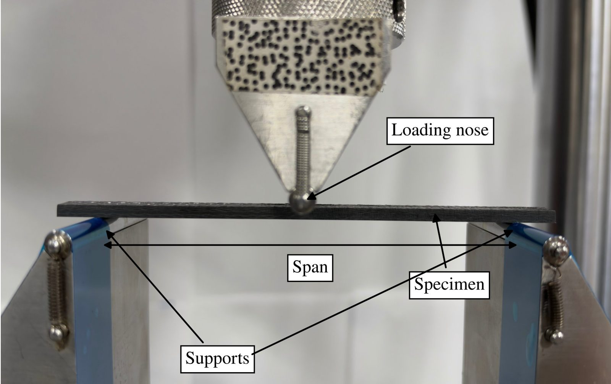
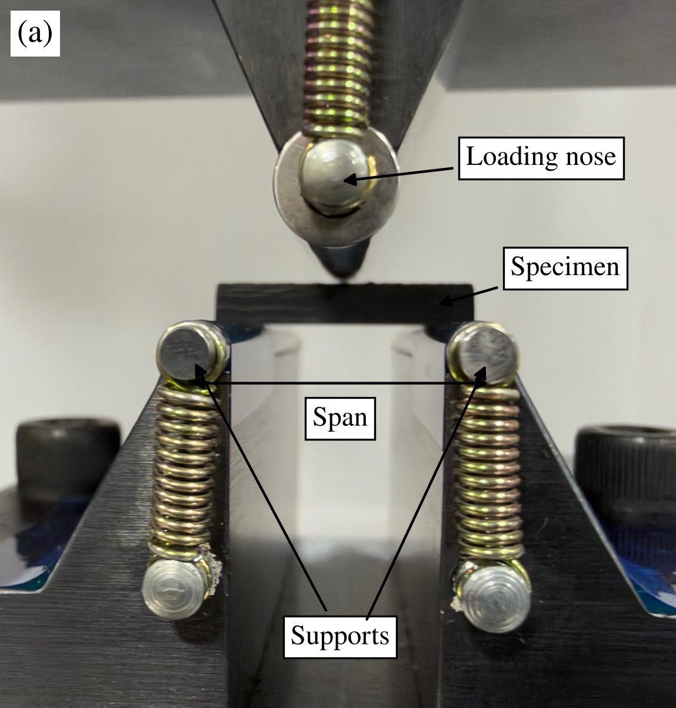
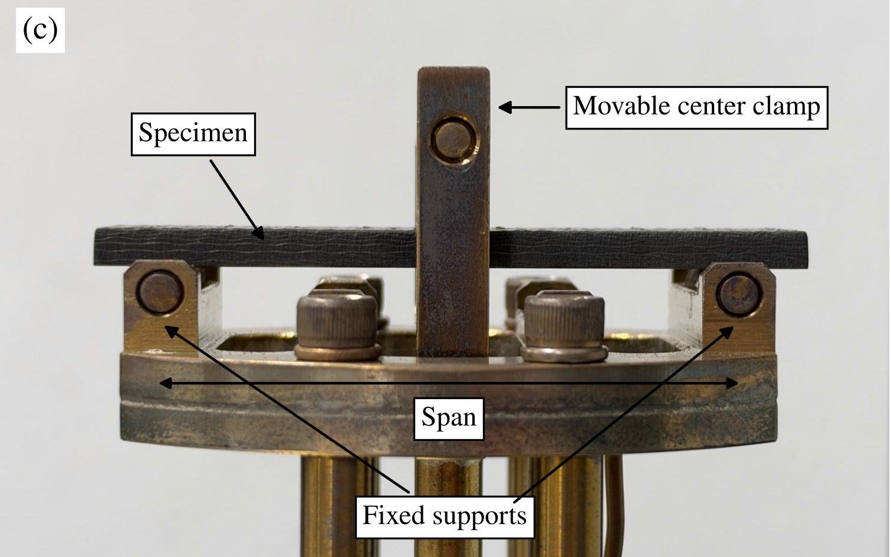
02 · FAA fuel-tank drop testing · 2025
Reliable sensor data from helicopter fuel-tank drop tests, with no sensors lost on impact.
I worked on the platform hardware and tank setup: a guided steel platform, a CG-balanced tank and a net-and-cable restraint.
Platform design (CAD)
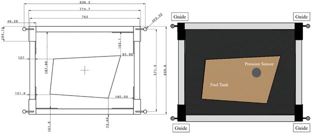
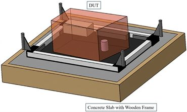
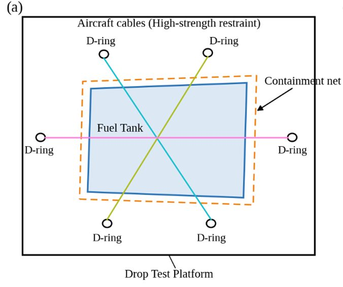
Build and tank setup
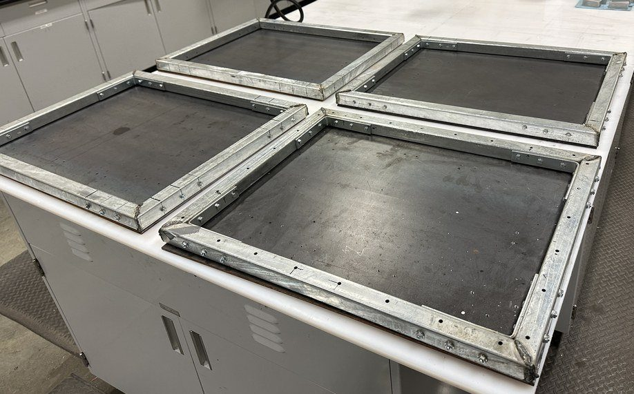
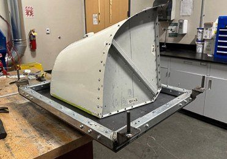
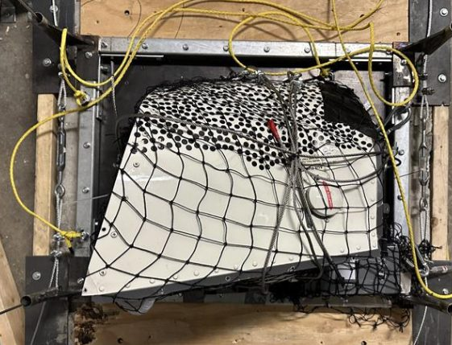
I made the sensor and DAQ fixtures and soldered the sensor wiring. Left: pressure-sensor fixture. Right: DAQ and accelerometers.
Pressure-sensor fixture · CAD
DAQ · aluminum sensor housing
Pressure-sensor fixture · CNC
Accelerometers · 3D-printed PLA fixture
Pressure-sensor fixture · solder, install and verify
Accelerometers · mount and tap test
03 · Large-scale composite 5-axis machining · 2025–2026
Project: Purdue CMSC research projects led by Dr. Garam Kim and Dr. Eduardo Barocio · my part was the machining
LSAM-printed parts come off oversized, so each one is trimmed to final shape on the machine’s 5-axis head.
Machined 4 sections, joined them into one mold and vacuum leak-tested it.
The four machined sections assembled into one mold.
Facing · Pocketing · Drilling · 5-axis spiral wall finish
Facing · Multi-axis sweeping finish
04 · Data-driven machining · 2025–now Ongoing
Project: Phase 1, 2025: team of 3 · Phase 2, 2026–now: my own system, advisor Dr. Garam Kim
Phase 1 tested a set grid of speeds and feeds; Phase 2 records every cut live so a model can later learn chatter and wear.
Thermal camera, vibration sensor, Raspberry Pi and stethoscope mic around a 3/4 in ball mill.
What we did: machined 3D-printed CF-ABS tooling across a range of speeds and feeds and compared surface finish, temperature, vibration and sound. Tap to open the full poster.
Thermal camera, microphone, Raspberry Pi 4 and accelerometer on one plate.
The module mounted at the router spindle.
Ball-end mill over the ABS test block on the LSAM.
Phase 2 workflow on the Thermwood LSAM: program the cut, record it on one clock, watch it live, archive every run.
Ball-end-mill raster toolpath for the pilot cuts on ABS (1/2 in, 4 flutes)
Vibration (4 kHz), sound (48 kHz) and heat (4 Hz) on one Raspberry Pi clock, no controller link
Flask dashboard: thermal map, audio spectrogram and vibration, with a real-time cut detector
Each run saved as Parquet and WAV files and uploaded to Purdue Box automatically
Pilot run, 21 Aug 2026: all 14 cutting passes show in every channel, and each frequency line is sorted into spindle, cutting or background.
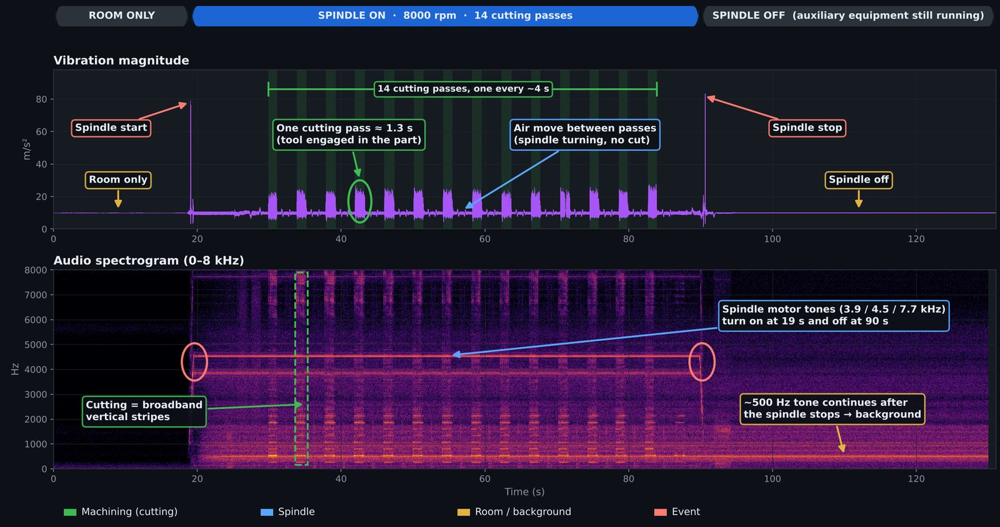
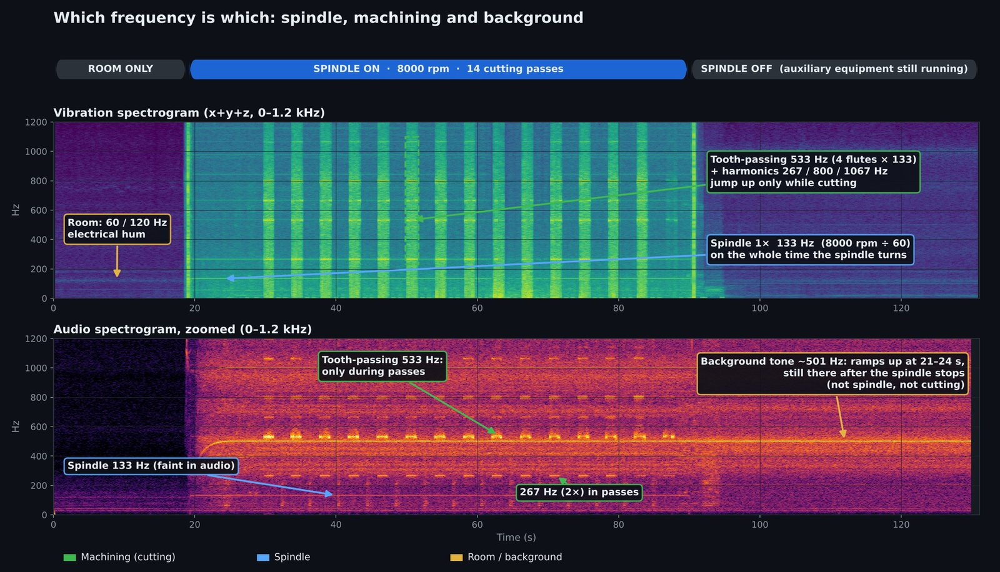
Instead of testing every speed–feed combination as in Phase 1, label normal and chatter runs across conditions, train a model to flag chatter from the signals in real time, then use the data to pick cutting conditions with less trial and error.
A microscope camera on a second Pi measures each tool after cutting, giving wear labels for the sensor data.
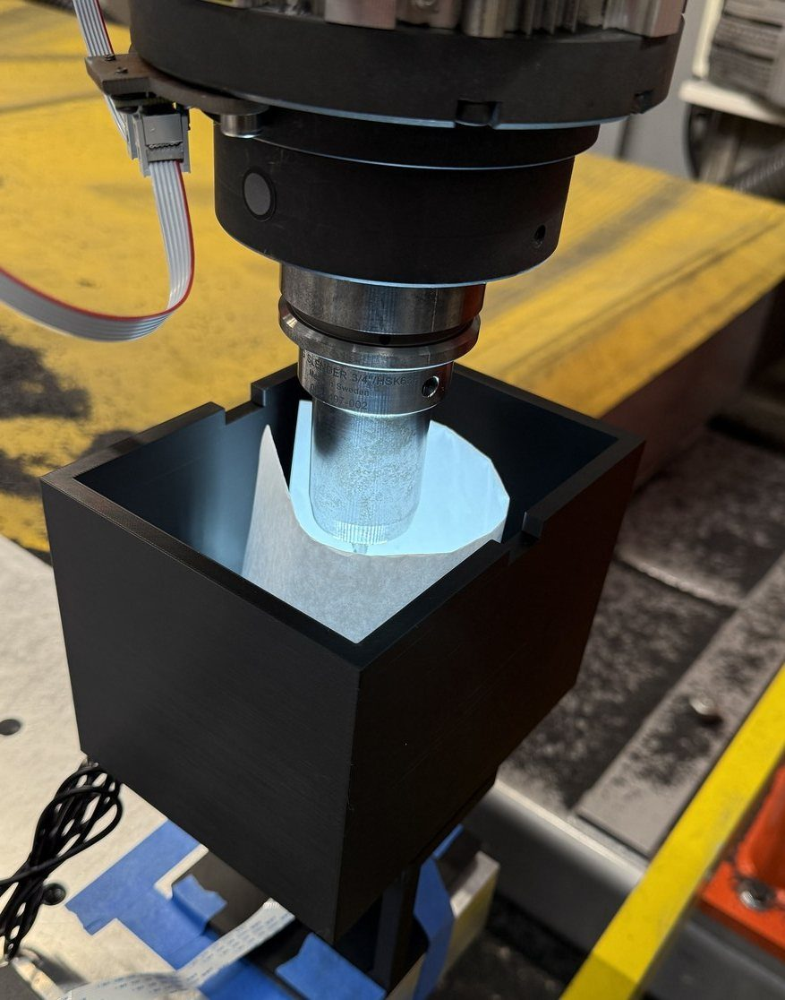
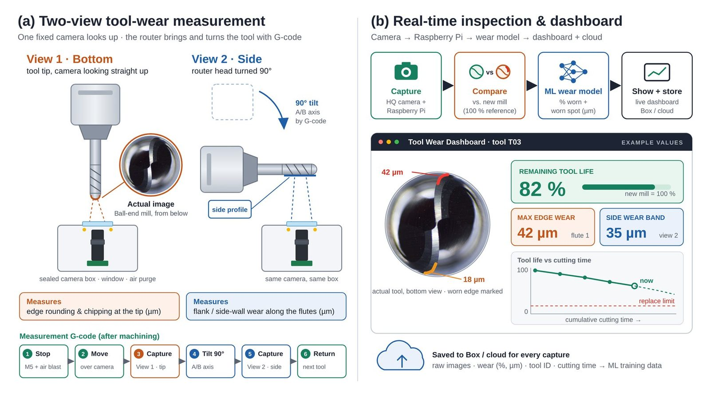
Built: camera stream, locked exposure, focus score per flank, full-resolution capture. Planned: wear scoring, ML wear model, dashboard. Values in (b) are examples.
Phase 1 was a team project with Varunavi Kaveri Raghuraman and Andrew Sheedy. Poster: Investigation of Optimal Machining Parameters for Fiber-Reinforced Thermoplastic Composite Tooling, SAMPE North America, poster #263 (3rd place).
05 · Hands-on build & teaching · 2024–25
A composite build from layup to finish, and a TA role teaching the CATIA-to-CNC workflow.
Composite build
CATIA & CNC lab
Contact
Draft view: empty photo slots and notes are shown. Visitors don’t see them.